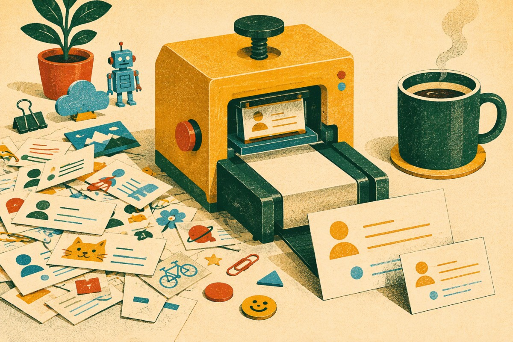
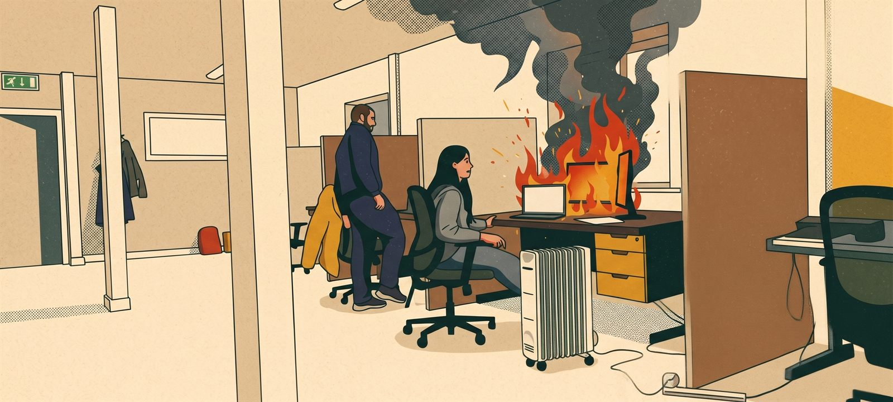
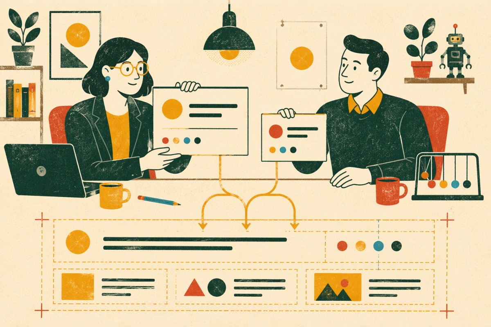
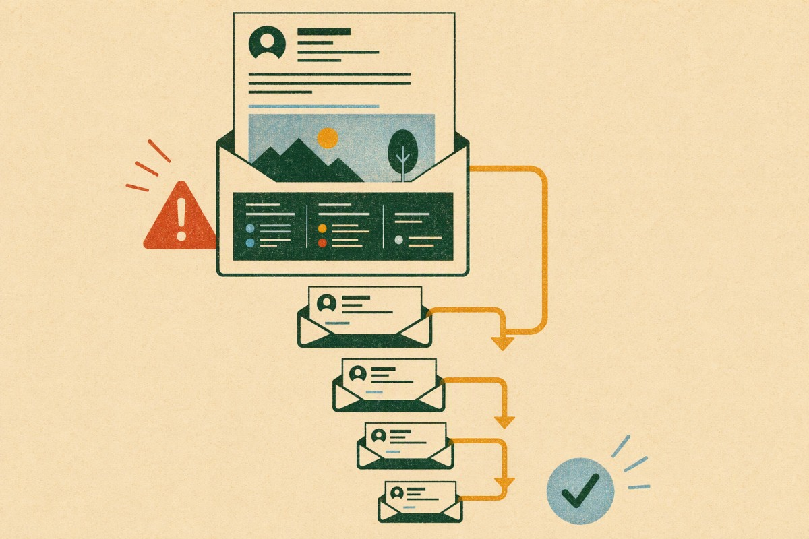
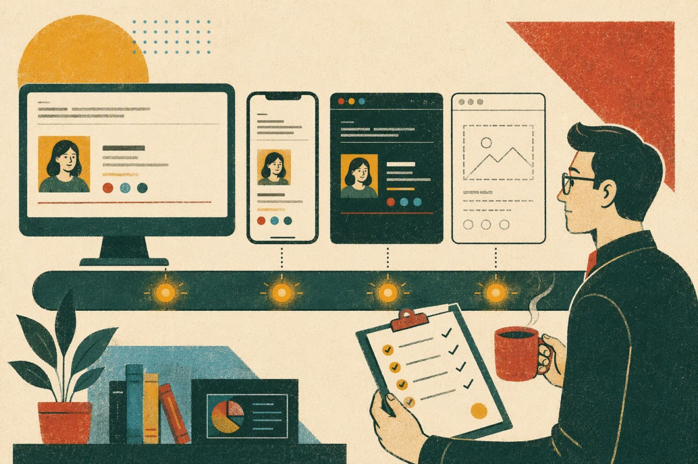

Friday Morning Coffee, episode thirteen: a training course, a birthday balloon, and the one small detail I actually took home.
A note before we start: everything below, footers included, is a suggestion, not a rule. ICM has no official guidelines on this. The signatures are only an example taken from existing ones, and building a company standard is not up to me.
Wojciech MrukFriday Morning CoffeeInsights #13

Stop 01 A topic I would like to share
I once went on a course about identity
Tús maith leath na hoibre. A good start is half the work, as they say in Irish.
This week we were all talking about important things: radiators, one banjaxed plug (Irish English for properly broken) and fires that, luckily, we did not have to put out. Nothing happened, and sure, it was a good reminder. So today I would like to raise a different topic. A much smaller one, with a lot less smoke.

Illustration only: an artist’s impression of what, luckily, did not happen (Friday Morning Coffee, Line 13).
Some time ago I attended a training on work ethos and company identity. You know the kind: values, brand, who we are and why it matters. Coffee, slides, a room full of people being politely thoughtful.
I went in with an open mind. I came out with mixed feelings, which, I have learned, is the correct way to leave most trainings.
Stop 02 Fair is fair
Part of it was lovely. Part of it was a balloon.
A good part was genuinely sympathetic: how we want to treat customers, how we want to treat each other, what we would like people to remember about working with us. I liked that, fair play to them (that is Irish for “well done”). It was honest and it was human.
The other part was inflated like a balloon at a birthday party. Big, shiny, impressive for about ten minutes, and then you notice it has started to sag in the corner.
But here is what stayed with me. Small details sometimes do a lot of good. Not the grand statements, the little things done the same way. Which is, when you take the capital letters off, what “standardisation” mostly means.
Stop 03 A simple example
Imagine three business cards
Imagine three colleagues hand a customer their business cards. One in a serious font. One with the logo gently stretched, like pizza dough. One with a phone number nobody has used for years.
Every card is perfectly fine on its own. Together they quietly say: “we are not entirely sure who we are.” Nobody did anything wrong. There was just no shared starting point.
In Ireland, “it’s grand” can mean anything from “excellent” to “I have given up, but kindly”. All three cards are, technically, grand. Whether that is the same “grand”, nobody says.
Now, an email footer is a business card that travels in every message. Nobody asks for it, everybody receives it, and it meets far more people than the card in your wallet. A small detail, with a surprisingly long reach.
Stop 04 Looking at what we already have
Two footers, borrowed from the top
My example is simple, and I did not design any of it. I took the existing Director and Marketing Executive signatures and looked at what they have in common. That shared structure is the example.

Illustration: two existing signatures, one possible starting point (Friday Morning Coffee, Line 13).
One idea might be: a full footer for a new message, because it introduces you and gives your details. A short one for replies and forwards, because the other person already knows who you are.

Illustration: full to say hello, short to keep talking (Friday Morning Coffee, Line 13).
Outlook can keep both and use a different default for new messages and for replies/forwards, so you set it once and forget it.
Illustration: the folder is where the examples live; this article is only the signpost (Friday Morning Coffee, Line 13).
No download buttons here. If you are curious, take the files from SharePoint, so everyone looks at the same version.
Stop 06 The honest part
This is a suggestion, and the call is not mine
To be clear: this is not a company standard, and it is not up to me to build one. I took an example from what already exists and wanted to share a thought. If the people who own our identity want to change it, or do nothing with it, that is entirely theirs to decide.

Illustration: if you try it, send yourself one test and see how it looks (Friday Morning Coffee, Line 13).
And if you like the idea, there is no ceremony. Set the two defaults, send yourself a new message and a reply, and see whether it looks sensible.
Small things, done the same way. No balloon required.
End of the line.
Grand so. Have a great weekend, everyone, and mind yourselves (that is how the Irish say goodbye). We are still at ///maybe.clays.lending.